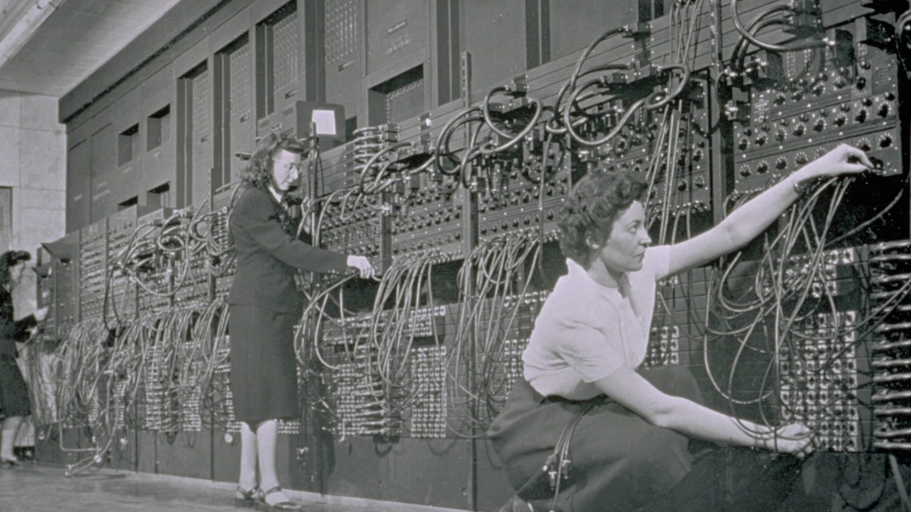
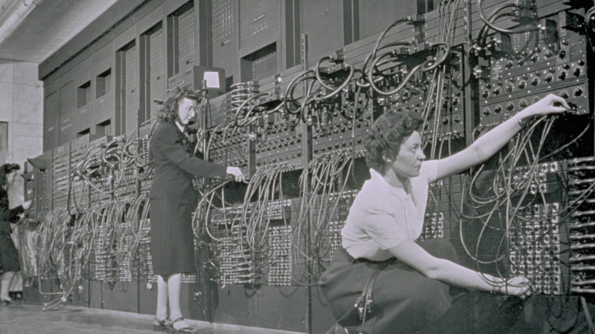

În timpul războiului, o serie de cercetători și ingineri au adus contribuții semnificative la dezvoltarea calculatoarelor și a tehnologiei informatice. Printre aceștia se numără Alan Turing, care a lucrat la criptanaliză și a dezvoltat conceptele care au stat la baza calculatoarelor moderne, și John von Neumann, care a avut un rol cheie în dezvoltarea arhitecturii von Neumann, utilizată în majoritatea calculatoarelor moderne.
Calculatoarele electromecanice, cum ar fi Bombele Turing și Colossus, au fost utilizate de către Aliați pentru criptanaliză, în special pentru decodificarea comunicațiilor cifrate germane. Aceste mașini au reprezentat o revoluție în domeniul criptanalizei și au oferit avantaje semnificative în ceea ce privește viteza și precizia față de metodele manuale de decodificare.
Atât Aliații, cât și Puterile Axei au utilizat calculatoare pentru a determina traiectoriile balistice ale proiectilelor de artilerie și ale rachetelor. Aceste calculatoare au fost utilizate pentru a îmbunătăți precizia loviturilor și pentru a obține un avantaj strategic pe câmpul de luptă.
Al Doilea Război Mondial a adus progrese semnificative în electronica militară, inclusiv în domeniul radarului și al comunicațiilor radio. Aceste tehnologii au contribuit la dezvoltarea ulterioară a calculatoarelor și a componentelor electronice esențiale.
De asemenea, au fost făcute progrese semnificative în tehnologiile de comunicații și de stocare a datelor, cum ar fi benzile magnetice și tuburile electronice. Aceste tehnologii au avut un impact semnificativ asupra dezvoltării ulterioare a calculatoarelor și a capacității acestora de a procesa și de a stoca informații.
Al Doilea Război Mondial a fost o perioadă crucială în evoluția calculatorului, care a pus bazele pentru dezvoltarea ulterioară a tehnologiei informatice și a calculatoarelor moderne. Inovațiile și progresele realizate în timpul acestui conflict au influențat semnificativ dezvoltarea tehnologiei în anii următori și au avut un impact profund asupra societății și a modului în care sunt utilizate calculatoarele astăzi.